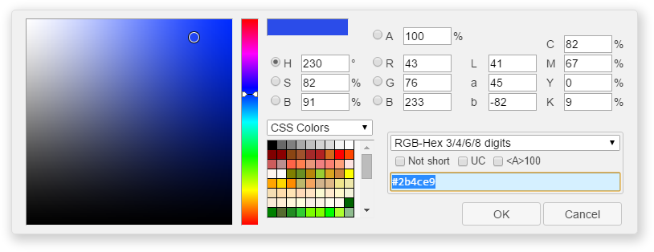

In HTML color is set by one of two variants:
HTML uses hexadecimal numbers to specify colors. The hexadecimal system, unlike the decimal system, is based, as its name suggests, on the number 16. The numbers will be as follows: 0, 1, 2, 3, 4, 5, 6, 7, 8, 9, A, B, C, D, E, F. Numbers from 10 to 15 are replaced by Latin letters. A table below shows the correspondence between decimal and hexadecimal numbers.
| Decimal | 0 | 1 | 2 | 3 | 4 | 5 | 6 | 7 | 8 | 9 | 10 | 11 | 12 | 13 | 14 | 15 |
|---|---|---|---|---|---|---|---|---|---|---|---|---|---|---|---|---|
| Hexadecimal | 0 | 1 | 2 | 3 | 4 | 5 | 6 | 7 | 8 | 9 | A | B | C | D | E | F |
Numbers greater than 15 in the hexadecimal system are formed by combining two numbers into one (see further table). For example, the number 255 in decimal corresponds to the number FF in hexadecimal.
| Decimal | 16 | 17 | 18 | 19 | 20 | 21 | 22 | 23 | 24 | 25 | 26 | 27 | 28 |
|---|---|---|---|---|---|---|---|---|---|---|---|---|---|
| Hexadecimal | 10 | 11 | 12 | 13 | 14 | 15 | 16 | 17 | 18 | 19 | 1A | 1B | 1C |
To avoid confusion in defining the number system, a hexadecimal number is preceded by a hash symbol #, for example #aa69cc. In this case, the case does not matter, so it is permissible to write #F0F0F0 or #f0f0f0.
A typical color used in HTML looks like this: <body bgcolor="#fa8e47">
The background color is defined here as #fa8e47. The # (hashtag) symbol before the number means that it's hexadecimal. First two digits (fa) define a RED part of a color, the digits from 3rd to 4th (8e) - green, and the last two digits (47) - blue. At the end we get this color:
| FA | + | 8E | + | 47 | = | FA8E47 |
Each of the three colors - red, green and blue - can take values from 00 to FF, resulting in a total of 256 shades. Thus, the total number of colors can be 256x256x256 = 16,777,216 combinations. A color model based on red, green and blue components is called RGB (red, green, blue; red, green, blue). This model is additive (from add - add), in which the addition of all three components forms the color white.
To make it easier to navigate hexadecimal colors, take into account some rules:
Colors based on hexadecimal values do not have to be empirically selected. For this purpose, a graphic editor that can work with different color models, for example, Adobe Photoshop, is suitable. In next Fig shows the window for selecting a color in this program; the resulting hexadecimal value of the current color is outlined with a line. You can copy and paste it into your code.
For those who work in VisualStudioCode there's an extension to work comfortably with color and it's called Color Picker.
If you set the monitor's color rendering quality to 8 bits (256 colors), then the same color can be displayed differently in different browsers. This is due to the way graphics are displayed, when the browser works with its own palette and cannot show a color that is not in its palette. In this case, the color is replaced by a combination of pixels of other, close to it, colors that imitate the given one. To ensure that the color remains the same across different browsers, a palette of so-called web colors was introduced. Web colors are those colors for which each component - red, green and blue - is set to one of six values - 0 (00), 51 (33), 102 (66), 153 (99), 204 (CC), 255 (FF). The hexadecimal value of this component is indicated in brackets. The total number of colors from all possible combinations gives 6x6x6 - 216 colors. An example web color is #33FF66.
The main feature of web color is that it appears the same in all browsers. At the moment, the relevance of web colors is very small due to the improvement in the quality of monitors and the expansion of their capabilities.
To avoid having to remember a set of numbers, you can use the names of commonly used colors instead. The table below shows the names of popular color names.
| Name | Color | Hexadecimal value | black | #000000 |
|---|---|---|
| blue | #0000FF | |
| fuchsia | FF00FF | |
| gray | #808080 | |
| green | #008000 | |
| lime | #00FF00 | |
| maroon | #800000 | |
| navy | #00080 | |
| olive | #808000 | |
| purple | #800080 | |
| red | #FF0000 | |
| silver | #C0C0C0 | |
| teal | #008080 | |
| white | #FFFFFF | |
| yellow | #FFFF00 |
It doesn't matter whether you specify a color by its name or by using hexadecimal numbers. These methods are equal in their effect.